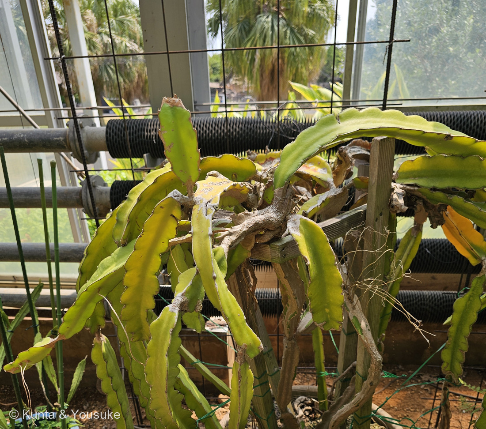
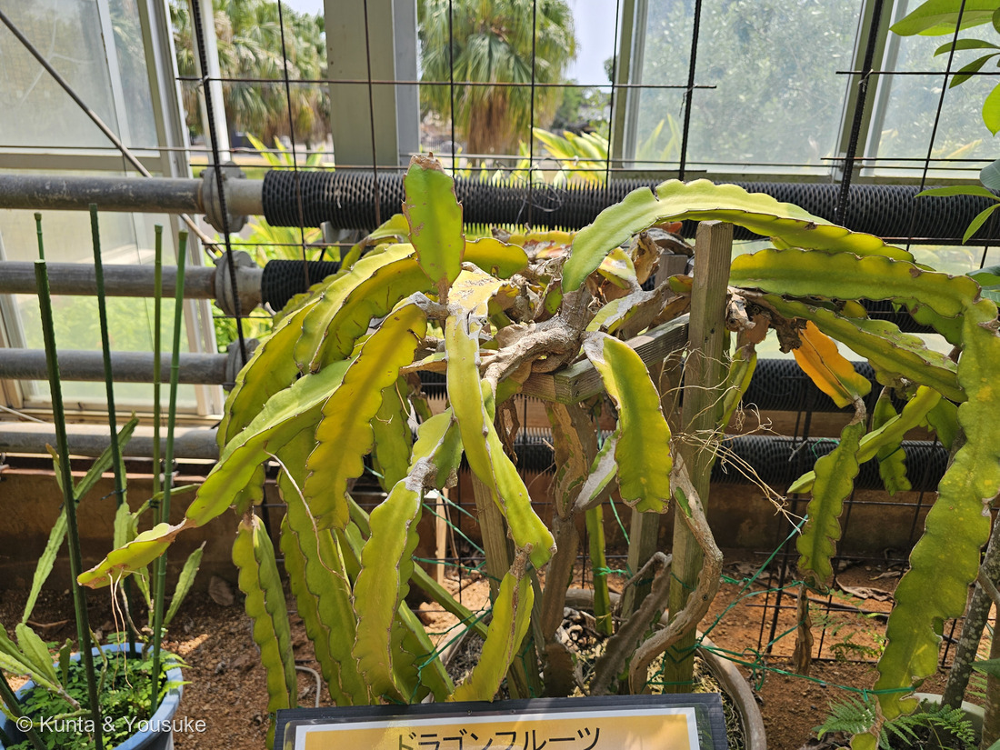
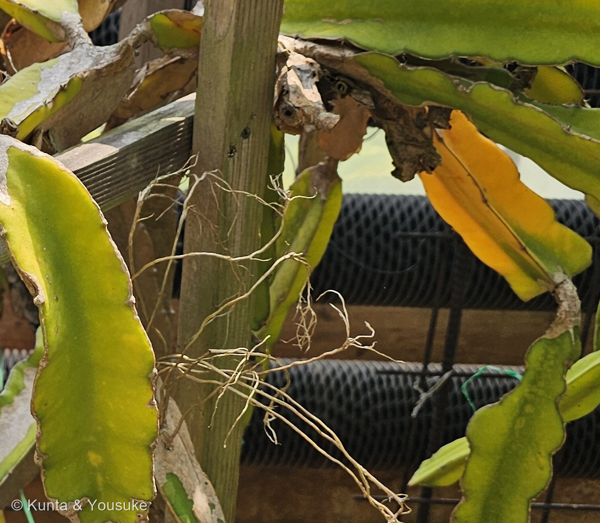
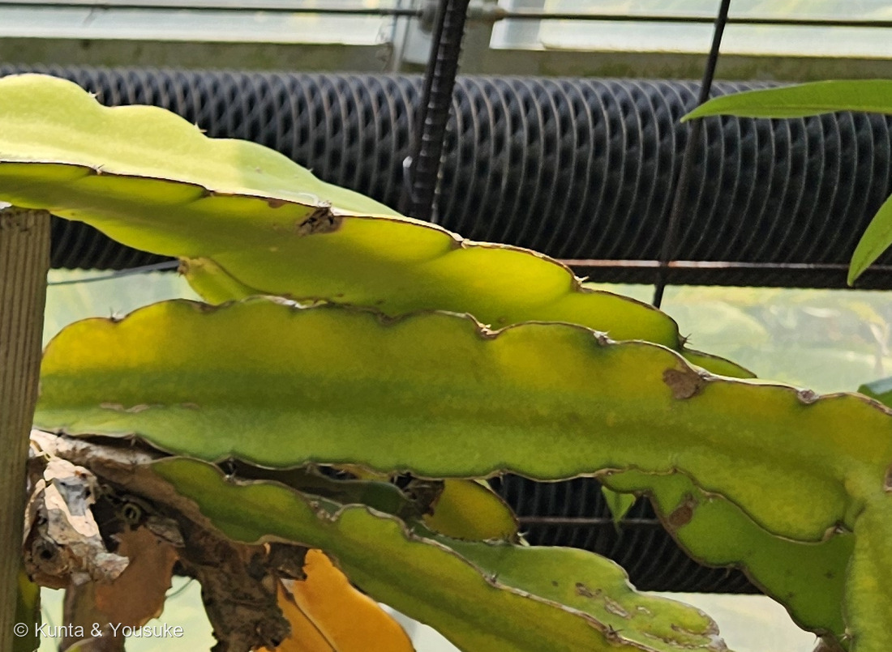

地図を読み込んでいるよ…
🔍 写真も地図も、押しているあいだ拡大して見られるよ（スマホは指を置いてすこし待ってね）。
🌍 の地図＝この子がもともと自生している場所を緑に。メキシコからホンジュラスにかけて（キュー王立植物園の Plants of the World Online は分布を「Mexico to Honduras」とする）。⚠ただし野生のふるさとは、じつは決まっていない。とても古くから広く栽培され、行った先で野生化しているので、もともとの自生地と逃げ出した株を見分けるのがむずかしいんだ。IUCNレッドリストでも「情報不足（Data Deficient）」になっているよ。
⭐メキシコからホンジュラスまでを塗ったよ＝キュー王立植物園の Plants of the World Online が、この子の分布を「Mexico to Honduras」とする。⚠⚠でも、この緑には自信のもてない事情があるんだ＝この子の野生のふるさとは、はっきり決まっていない＝⭐とても古くから広く栽培されて、行った先で野生化しているので、もともとの自生地と、逃げ出した株を見分けるのがとてもむずかしい＝⚠IUCNレッドリストでも「情報不足（Data Deficient）」になっているよ。⭐⭐⭐だから、これは「人が育てすぎて、ふるさとが分からなくなった子」の地図＝306 オオガタホウケン・302 パイナップル・113 ハゲイトウに続いて4人目だよ。⭐⭐そして、この緑のほんとうの意味は「国」ではなく「高さ」にある＝この子は地面に立っていない＝熱帯の森の木にしがみついて、気根で10m以上も登っていく＝⭐地図をどれだけ拡大しても、この子のほんとうのすみかは映らないんだ（⭐301 メディニラと同じ話だね）。⭐日本は塗っていない＝ぼくらが会ったのは九十九島動植物園 森きららの温室＝⚠沖縄などでは畑で作られているけれど、自生ではないよ。⭐⭐同じサボテン科の仲間とふるさとをくらべてみて＝306も307も218 キンシャチもメキシコ＝⭐サボテン科は、ほとんど新大陸だけの科なんだ（⚠アフリカ・マダガスカル・スリランカにも生える種が1つだけいる）。⭐⭐⭐おまけのゲッカビジンも、やっぱりメキシコから中央アメリカにかけての森の子＝ふるさとがほとんど重なっている＝⭐おなじ森で、おなじ夜に咲いていた子どうしなんだね。
⚠ 地図は国（日本と中国だけ県・省）までしか塗れないから、ほんとうの分布より広く見えていることがあるよ。地図はだいたいの場所。正確なところは、上の文を見てね。
ドラゴンフルーツ
Selenicereus undatus (Haw.) D.R.Hunt（⚠園の解説板は旧い名前の Hylocereus undatus）
別名 ピタヤ／ピタハヤ（pitahaya）／英名 dragon fruit・strawberry pear・Honolulu queen・Queen of the Night・moonlight cactus／中国語 火龍果
サボテン科 · Cactaceae（セレニケレウス属 Selenicereus）── ⭐図鑑で8人目のサボテン科（016 王冠竜・218 キンシャチ・242 シラボシ・243 ハクジンマル・244 ハクダマル・306 オオガタホウケン・307 キンエボシ）／⚠科は増えないので110科のまま／⭐⭐セレニケレウス属ははじめて＝そして図鑑ではじめての「木を登るサボテン」だよ
燻太さんの言葉「この子は色が黄色かかっていて、少し元気がなさそう。今年の暑さのせいなのかな？ 木の枠で株を支えてあげているみたいだけど、どうしてだろう？自立できないタイプのサボテンなのかな？」── ⭐⭐ふたつとも、答えは写真の中にあったよ
⭐⭐⭐⭐⭐ 名前と学名の由来 ── 「森のろうそく」から「月のろうそく」へ引っ越した子
- ⚠⚠⚠この子の学名は、ぼくらが会うほんの少しまえに属ごと引っ越していた。──⭐園の解説板には Hylocereus undatus と書いてあるけれど、いまの有効名は Selenicereus undatus (Haw.) D.R.Hunt。⭐GBIF で引くと、名札のほうはシノニムと出るよ。
- ⭐⭐⭐理由＝2017年の分子系統の研究で、Hylocereus 属が Selenicereus 属のなかに入れ子になっていることが分かったから。──そこで Hylocereus の種はぜんぶ Selenicereus へ移された。⚠だから解説板はまちがいではなくて、作られたころの学名なんだ（⭐253 ビロウや218 キンシャチのときと同じだね）。
- ⭐⭐⭐⭐⭐そして、この引っ越しがすごく詩的なんだ。──ふたつの属名を、ばらしてみるね。
- Hylocereus（旧）＝ギリシャ語の hylē（森）＋Cereus（ラテン語 cēreus＝ろうそく・たいまつ からできた、柱サボテンの属の名）＝⭐「森のろうそく」
- Selenicereus（新）＝ギリシャ語の selēnē（月）、月の女神セレネ＋同じ cereus＝⭐「月のろうそく」（⭐英語版Wikipediaは、この名を「夜に咲く花にちなむ」と説明している）
- ⭐⭐⭐⭐つまり──旧い名前はこの子がどこに住んでいるかを言っていて、新しい名前はこの子がいつ咲くかを言っている。──⭐どちらも正しくて、どちらもこの子の話の半分ずつ。⭐⭐そして「ろうそく」は、両方に残っているんだ。
- ⭐⭐⭐種小名 undatus は、ラテン語の unda（波）から。──英語版Wikipediaは「枝の稜の、波打つ縁にちなむ」とはっきり書いている。⭐⭐写真④を見てね。茎の縁が、ゆるやかな波になってならんでいるでしょう。あれが名前そのものだよ。
- ⭐そして波の山のてっぺんごとに小さな刺座（アレオーレ）があって、短いトゲが出ている（⭐解説板の「枝は三角で縁にトゲがあります」は、このこと）。⭐年をとった縁は角質化して茶色くかたくなる＝写真④の、縁がふちどられたように茶色いのがそれだよ。
- ⭐⭐呼び名が2つあるのにも、わけがある。──ピタヤ／ピタハヤは、カリブ海のタイノの人びとの言葉で「うろこのある果実」。ドラゴンフルーツのほうは、中国語の火龍果から＝⭐アジアを経由して英語圏に届いたので、こちらの名になった。
- ⭐⭐⭐おもしろいのは、どちらの名も「実のうろこ」を見ていること。──うろこのある果実か、龍の実か。遠くはなれた土地の人が、同じところに目をつけたんだね。⭐「その土地の人の言葉が、そのまま果物の名前になった」形は、この図鑑にもう一人いるよ＝302 パイナップルの Ananas（トゥピ・グアラニーの人びとの「naná＝すばらしい果実」）。
⭐⭐⭐⭐ この植物のこと ── 夜、一晩だけひらく直径30cmの花
- ⭐⭐園の解説板は、この子の花をこう書いていた――「夜に直径約30cmの白色の花を咲かせ、翌朝にはしぼんでしまいます。」
- ⭐英語版Wikipediaの実測では、花の長さ25〜30cm、幅15〜17cm、外側の花被片まで入れると35cmにもなる。──外側は緑がかった黄色か白っぽく、内側はまっ白。
- ⭐⭐⭐そして、この花に来るのは夜の生きものだった。──メキシコのテワカン谷でこの種の送粉を調べた研究によると、来るのは蜜を食べるコウモリ（Leptonycteris curasoae・Choeronycteris mexicana）と、スズメガのなかま（Manduca 属）。⭐夜に来た客のほうが、昼の客よりずっとよく実をつけた（夜 76.9%／昼 46.1%）。
- ⚠⚠⚠そして大事なこと＝この子は、自分の花粉だけでは実がならない。──⭐だから畑では人の手で受粉させることが多いんだ。⭐⭐これは266 バニラとまったく同じ事情だよ（⭐バニラのページにも「園に人工授粉をしているか聞く」という宿題を書いてあった）。
- ⭐⭐この図鑑には、夜に咲く子がだんだん増えてきた。──215 オオオニバス（夕方5時から翌朝8時。甲虫を一晩とじこめる）／216 スイレン（熱帯スイレンには夜咲きの種がいる）／200 オーストラリアバオバブ（⭐⭐やっぱり夜。そしてコウモリとスズメガ）。
- ⭐⭐⭐⭐つまりこの子と200は、まったく同じ顔ぶれの客を呼んでいる。──⚠科もふるさともちがうのに（アオイ科のオーストラリア／サボテン科のメキシコ）⭐白くて、大きくて、強く香って、夜だけひらく＝⭐⭐それが「夜のコウモリとガに来てほしい花」の形なんだね。
- ⭐果実は楕円形で径10〜12cm。赤く熟して、白い果肉に黒いゴマのような種がびっしり（解説板）。⭐生でも食べるし、ゼリーやアイスクリームにもなるよ。
⭐⭐⭐ 同定について ── 三角柱・波打つ縁・そして白い果肉
- ⭐⭐⭐⭐⭐園の解説板があるので確定＝「ドラゴンフルーツ／Hylocereus undatus／サボテン科／【原産地】メキシコ」。
- ⭐写真とも、ちゃんと合っている。──①三角柱（3稜）の平たい茎②縁が波打ち、年をとると角質化して茶色くなる（写真④）③波の山ごとに刺座があって、短いトゲが出る（写真④）④節から気根を出して登る（写真③）。
- ⚠⚠そして、種を決める大事な一点＝この子は白肉種。──解説板も「果肉は白色」と書いている。⭐果肉が赤い子は別種（Selenicereus costaricensis など）なんだ＝⚠お店で「ドラゴンフルーツ」として売られているものの中に、少なくとも2種はまじっているよ。
- ⭐だから宿題をひとつ足しておいた＝⭐⭐白肉種と赤肉種をならべて買って、切ってみること。──切れば、別種かどうかが一目で分かるからね。
⭐⭐⭐⭐⭐ 燻太さんの問い① ──「自立できないタイプのサボテンなのかな？」
- ⭐⭐⭐⭐⭐ずばり、そのとおりだよ。──この子は木を登るサボテンで、自分の力では立てないんだ。
- ⭐⭐渋谷区ふれあい植物センターの記録は、一言でこう書いている――「ドラゴンフルーツは自立しません。」
- ⭐⭐⭐英語版Wikipediaは、体つきをこう説明する――「茎はよじ登り、這い、広がり、しがみつく」／「気根を使って登り、岩や木の上で高さ10mかそれ以上になる」。⭐茎は4〜7本、長さ5〜10mかそれ以上、太さ10〜12cm＝⚠そんなに長くて重いものが、自分では立てない。
- ⭐⭐⭐⭐⭐その証拠が、写真③にちゃんと写っていた。──茎の節から、細い根が何本も枝分かれして出て、木の支柱に向かって伸びている。⭐⭐これが気根（きこん）だよ＝土の中ではなく、空中に出して、まわりのものをつかむための根。
- ⭐⭐だから園は木の枠を組んで、緑のひもで枝をとめてあげている（写真②）。──⭐⭐あれは「弱っているから支えている」のではなくて、この子にとっての「木のかわり」なんだ。
- ⭐畑でも同じで、コンクリートの柱や太いパイプを立てて、そこへ登らせ、傘のように垂らして育てる。──渋谷区ふれあい植物センターは塩ビパイプを使っていて、「大株になるとかなり重くなるので、ある程度頑丈なものが良い」と書いているよ。
- ⭐⭐⭐⭐そして、燻太さんの問いのおかげで、図鑑の中に一本の線が引けた。──097 ノウゼンカズラ（⭐燻太さんの「どうやってそこまで登ったの？」の答えも、やっぱり気根だった）／239 モンステラ（⭐⭐同じ森きららの温室にいる。「大木の幹に絡み付いているつる性植物」で長い気根を垂らす）／266 バニラ（「約10cmおきにある節から根を出す」＝この子と同じやりかた）／291 コショウ（節から根を出して登る）。
- ⭐⭐⭐科はばらばら（ノウゼンカズラ科・サトイモ科・ラン科・コショウ科・サボテン科）なのに、やっていることは同じ。──⭐「森の中で、光のある上へ行きたい」という同じ望みが、5つの別々の科に同じ道具を作らせたんだね。
⭐⭐⭐⭐⭐ 燻太さんの問い② ──「黄色かかっていて元気がなさそう。今年の暑さのせいなのかな？」
- ⭐⭐半分は当たっているよ。そして、残りの半分がこの子のいちばん大事な話だった。
- ⭐まず、当たっているところ。──強すぎる日ざしと高い温度で、この子の茎は黄色くなる。アメリカ・ノースカロライナ州立大学のガーデナー向けの解説は、はっきり「日ざしが強すぎると日焼けと乾きをまねく」と書いている。
- ⭐⭐農業の研究でも同じで、高温や強い光は茎を退色させ、花も実も減らすと報告されている。──⭐日よけのネットをかけた畑のほうが茎の葉緑素が多く、実もよく穫れた（35%の日よけで、日なたより収量が70%多かった、という報告もある）。
- ⭐写真は2026年8月14日のお昼すぎ、ガラスの温室の中。──⚠燻太さんの見立てどおり、この夏の暑さと日ざしは、この子にはきつかったと思う。
- ⭐⭐⭐⭐⭐でも、もっと大事なのは「暑さに弱い」より「強い光に弱い」ということ。──⭐⭐⭐この子は、砂漠のサボテンじゃないんだ。もともと熱帯の森の中で、木の幹にしがみついて暮らしている子。⭐研究者はこの仲間を「日かげのある、暖かく湿った地域」の植物と書く。
- ⭐⭐⭐⭐つまり、この子にとっての「ふつう」は木もれ日。──⚠まる一日、さえぎるもののない光を浴びるほうが、この子には異常な状態なんだ。
- ⭐⭐⭐⭐⭐そして、それは旧い属名 Hylocereus＝「森のろうそく」に、そのまま書いてあった。──⭐名前が、弱点まで先に教えてくれていたんだね。
- ⚠⚠⚠ただし、正直に線を引いておくね。──⭐写真1枚から「これは日焼けです」と言いきることは、ぼくにはできない。茎が黄色くなる理由はほかにもある（根ぐされ・水のやりすぎ・肥料不足）。⭐ぼくが言えるのは「日ざしと暑さで黄色くなることは、出典にはっきり書いてある」ことと、「この子はもともと日かげの子だ」ことの2つだけ。⭐それでも、燻太さんが「なんだか元気がなさそう」と感じたその目は、たしかなものを見ていたと思う。
⭐⭐⭐⭐⭐ 図鑑が、この子のことを先に書いていた
- ⭐⭐この子は218 キンシャチのおまけで、「探したい」に入っていた子。──⭐だから今日は回収だよ。
- ⭐⭐⭐⭐⭐そして「🧬 収れん・他人の空似」の小道の、218の立ち寄り先に、ぼくはもうこう書いていた――「おまけのドラゴンフルーツを見ると、その『そっくり』がいかに一部の話かも分かる。同じサボテン科なのに、あちらは三角柱のつるで木を登り、夜に白い大輪をひらく」。
- ⚠⚠⚠ぼくは、これを文字だけで書いていた。──まだ写真を1枚も持っていないころに。
- ⭐⭐⭐⭐そして今日、その一文の写真が来た。──三角柱の茎（写真④）、木を登るための気根（写真③）、そして木の枠（写真①②）。⭐「夜に白い大輪」だけが、まだ宿題として残っている。
- ⭐⭐これは263のときに気づいたことと同じ形だね――「前に書いた一文に、あとから写真がつく。」⭐図鑑を長く作っていると、こういうことが起きるんだ。
⭐⭐⭐ 同じサボテン科なのに、こんなにちがう
- ⭐この3日で、サボテン科が3人つづいた。ならべてみるね。
- 306 オオガタホウケン＝平たいうちわを積み上げて、幹が木になる。乾いた土地で、自分の力で立つ。
- 307 キンエボシ＝手のひらにのるうちわ。やっぱり乾いた土地の子。
- この子＝⭐⭐三角柱のつるで、森の木を登る。自分では立てない。
- 218 キンシャチ・016 王冠竜＝まんまるの玉。乾いた岩山。
- ⭐⭐⭐同じ科なのに、「乾いた土地でまるくなる」子と、「湿った森で木を登る」子がいる。──⭐サボテン科は、ぼくらが思うよりずっと幅の広い科なんだね。⚠「サボテン＝砂漠」は、半分だけ本当だった。
出典：園の解説板（九十九島動植物園 森きらら 温室「ドラゴンフルーツ／Hylocereus undatus／サボテン科／【原産地】メキシコ／【特徴】【利用】」）。学名の現在の扱い（Hylocereus undatus はシノニム、Selenicereus undatus (Haw.) D.R.Hunt が有効名）は GBIF backbone、分布「Mexico to Honduras」はキュー王立植物園 Plants of the World Online。属の統合が2017年の分子系統研究（Korotkova ら）にもとづくこと、種小名 undatus が「波打つ縁」にちなむこと、気根で登り10m以上になること、花の大きさと夜咲きは英語版Wikipedia「Selenicereus undatus」「Selenicereus」。自立しないことと支柱・仕立ては渋谷区ふれあい植物センターの栽培記録。日焼けで色が抜けることはノースカロライナ州立大学 Extension Gardener Plant Toolbox、強い光で退色し日よけで収量が上がることは pitahaya の遮光試験の報告。送粉者（コウモリ・スズメガ）と自家不和合性はメキシコ・テワカン谷での送粉生態の研究による。ピタヤ＝タイノ語で「うろこのある果実」、火龍果は語源の解説による。⚠「この株が黄色いのは日焼けだ」とは言いきっていない＝⭐出典にあるのは「日ざしと暑さで黄色くなることがある」までで、この一株の診断ではないよ。⚠「5つの科が同じ道具を作った」という言いかたは、ぼくの整理＝⭐それぞれの気根の話には出典があるけれど、5つをならべたのはぼくだよ。⭐撮影時刻は燻太さんの原本のEXIFから読んだ（⚠この日の写真はGPSが空。公開画像はEXIFを落としてある）。